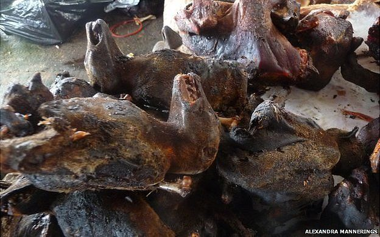

DrAfi's webpage
I was born in Pakistan in a small mountainous village in north west region which is close to lslamabad, Pakistan. My birth home village is on the series of mountains so no flooding and close to The Himalayas series of mountains so it is freezing cold in the winter. My late father was an engineer in the British army (an expert in identifying the faults in revolver pistol and short guns but never allowed any of us to touch any of those weapons). His moto was that guns should not be kept at home as you can lose temper and will hurt anyone and will regret rest of your life. Instead he waned to educate us. My late mother was house wife and her ancesters was from Turkey so none of us (my sibling and my mother look local but i was the most unusual and local treated me as a foreigner. Once my teacher asked me how come I speak very good local language (urdu) and other teacher said that i am the only one who speak english.
DrAfi's Professional experience
I am trained as a vet and worked on rabies ad my research helped to save lives of about 5000 families. I won two scholarships on competition and was told that i am the second top from over 20 thousands application. I came to UK to do my Ph.D and worked on respiratory virus, and how virus could cause abortion and worked on vaccine and antiviral research. `my findings led to many successful PhD programme in UK abroad and my lab became hub of international collaboration.
I also worked on children vaccine and biodefence vaccine for homeland security funded by US government. I used to collaborate and exchange research ideas with someone who used to brief `president George Bush junior. I am offered job in china as a professor and they were disappointed when i could not join. I got a job in Caribeans medical school just after 3 min mobile phone call. In medicine you do not get a second chance so as training in Cambridge university for over 18 years led me to have a very high standard. When students were found cheating and ever one started getting 100% marks, but would not have a clue in the class. When i changed few questions every one failed . They asked to cancel exam results or give them extra marks but when that did not happen they they started to make false complaint especially those who could not get into clinics . Being a private university they could no afford to expel all cheating students so my job ended.
DrAfi's teachng experience and research interests
I teach infectious course bacteriology, virology, immunology, histology, pathology embryology, postmortem, forensic medicine pharmacology and clinical skill. I also taught diagnosis, and treatment of breast cancer, colon cancer and lung cancer. I have also done first aid course. I also review papers on infectious disease, vaccine and antiviral research for national and international journal.
DrAfi's interests
i like gardening, DIV, classic motorbikes and classic cars. I also acted in drama series. I am married and my wife is half Swedish half British and a graduate from Edinburgh University and grown up in Scotland. I live in Cambridge.
the lady from Norway died of rabies after bitten by puppy she rescued in Philipine
I am the only one evoloved better than my cousins (see pics on right), went to univeirsty and got degrees, doctorate and post doctorate with teaching research and admin experience. Sadly people in amazon and Africa used Chimps monkeys and bats as "bush meat" and many disases like Ebola, Dengue, zika and SIV jump the species and caused deadly diseases in human.
